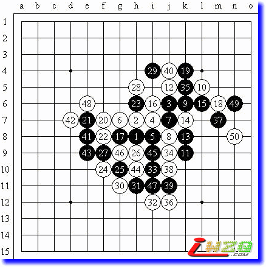
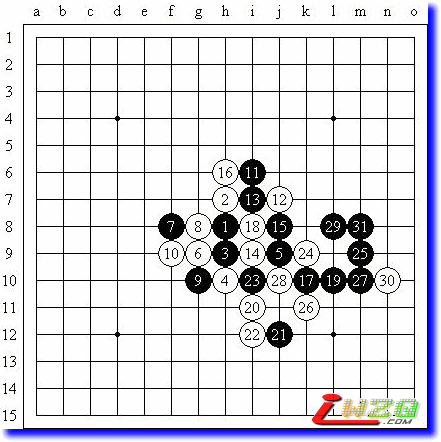

求请屏蔽老师闲暇时间帮忙写份棋评！学生感激之至~
#1 求请屏蔽老师闲暇时间帮忙写份棋评！学生感激之至~ 作者：蜀桑子 发表时间：2008-9-3 15:41:10
屏蔽老师您好：
最近在网上看了很多您写的评论，觉得您的棋力和人品都令学生仰慕至极，特别是您对每颗棋子效率的敏感程度和对大局的判断非常之精准，所以近半个月以来一直特别想请求您为学生解开一些谜团，又怕耽误您的宝贵时间，让我很无奈的是自从半个月前在天王赛上执白与孙立京老师下过一盘疏星后，这半个月几乎每天都得为此事钻牛角尖一个多小时，虽然得出一些结论，但又无法判断是否是正确的，很多问题甚至还是百思不得其解，今天终于憋不住了，鼓起勇气想请您出山帮学生分析一下这盘棋，也好了却我一桩心事，最好是在不影响您日程的情况下，用闲暇时间做一个简单的局势判断即可。棋局如下：
=======上图对应的爱五子棋谱代码如下，以便你拆解：========
h8g7f6h7g8i7f7f8e6d5e9f5e8e7d6g6i8c6e4j7k7j8h6j10i10h9j9h5g4i11h11g12g10f9e5f12c7f10f11f4k8l7k9h10g9i9g11k6b6b8
======================================================
孙立京(黑)VS蜀桑子(白) 长星(疏星) 不换 5A=i7 和棋
猜先后励精老师执黑开出长星局，我没有交换，白4变疏星。
黑11我没有见过，考虑了20多分钟后下的白12，后来我们俩总是不断长考，用了两半小时以上，下成了这样，我自己的感觉总是施展不开手脚，双方很多时候都过于纠缠，这盘棋下得很累，后来因为励精老师还有重要的事，必须走了，所以在黑49位做了一手简单的VCF，我下了白50后双方商议和棋。
我非常想知道，现在已有的局面，双方有什么亮点还有什么失败的地方，如果继续发展的话，会是什么结果。我现在没有足够的能力作出准确的判断，屏蔽老师如果能帮学生一把，下次见面一定请您吃大餐。拜托老师了。
-------------------------------------------------------------------------------------------
=======上图对应的爱五子棋谱代码如下，以便你拆解：========
h8h9h7h6j7g7f8g8g6f7i10j9i9i7j8h10k6i8l6i5j4i4i6k7m7k5m6j6l8n6m8
======================================================
这盘松月是几个月前我和老师您在天王赛上的对局，当时是我独自在家学棋两个多月的时间，在网上找到了爱五子棋网，发帖认识了土豆师父，不到半个月，他推荐我来参加天王赛体验一下，那时候很多开局名称都还记得不太熟，猜先后您执黑开出了松月局，我从来没有下过，甚至忘了这是什么开局，我执白苦撑30手后投子，下完后您耐心给我讲解了很多知识，给我留下了极深刻的印象，后来向土豆师父打听才知道您是非常著名的高人，只是当时学生我白费了您的苦心，您当时讲得那么多，我百分之九十以上都没听懂，只是当时留心把你说的话记了一些，以后才慢慢能理解一些皮毛，现在回过头来看这盘棋觉得只想会心一笑(黑棋太精彩了)，您若有闲暇时间，请再帮我讲讲这盘，谢谢老师，祝您健康。
［ 有志青年 于 2008-9-4 7:49:37 时奖励此帖[金币加 20 威望加1］
#2 Re:求请屏蔽老师闲暇时间帮忙写份棋评！学生感激之至~ 作者：雅匪 发表时间：2008-9-4 23:17:44
俺个人认为楼主的“求请”调整为“敬请”较为合适及获得应响，双方皆易自然无压力，顺道快乐吉祥：）#3 Re:求请屏蔽老师闲暇时间帮忙写份棋评！学生感激之至~ 作者：屏蔽 发表时间：2008-9-8 0:41:11
http://hi.baidu.com/%C6%C1%B1%CE/blog/item/de4f5c16435fc64c21a4e95c.html
真是太抬举我了……棋评在上面的链接里写好了。我也在考虑，找个有空的时候写，然后我发现那就是一周以后了，然后我就今儿给写了……

这个是长星是吧……图上2、4弄反了，不过选取自己熟悉的变化还是有必要的。11之前都是流行定式，12很高兴你竟然通过自己的努力把唯一防算出来咯~不过14的防守是错误的，15-34，16-l9，17-33，以下黑棋就VCF了。实战的交换交出了先手但问题不大，将局面导向平衡了。20、22是很积极反而想法，不错。24这里应该有更好的选择，比如直接24-25什么的。这时黑棋率先冲四的交换，时机就很好了，一下子打开了局面，丰富了连接，但是白棋用进攻来消除黑棋的势力也是很不错的。30后白棋优势其实并不大，31-h12其实是简单的一手选择，实战中的交换太过直接了，以至于后面双方都没什么机会。50之后黑棋找时间在f5补一手，局面白棋比较有机会，但是要取胜就比较困难了。

8-18的变化似乎更好，这个白8弱了。13是普通而有效的手段，预留了14、24位等好点，对于这个14，15-i5其实就VCT了，不过当时没过脑子，直接按照一般的手段去做棋了。17是常见的形状，预留l11、j11的连续手段和k8的强点，18是想兼顾一下，19又是常见的进攻手段，这时20追求强烈反击的意识还是不错的，毕竟直接防守已经很困难了，24位和l11都是好点。21是保守而认真的想法，因为几乎实战22、24的手段就是所能看到的最强防，一旦发现25以下的VCT，21也就不再犹豫了。
#4 Re:求请屏蔽老师闲暇时间帮忙写份棋评！学生感激之至~ 作者：蜀桑子 发表时间：2008-9-8 12:52:17
 屏蔽老师辛苦了，学生对您的仰慕犹如滔滔江水连绵不决，又如黄河泛滥一发不可收拾...
屏蔽老师辛苦了，学生对您的仰慕犹如滔滔江水连绵不决，又如黄河泛滥一发不可收拾...
赶哪个星期六我去比赛见到您的话，一定请您和我师父土豆一起吃晚饭，我知道您食欲很好，最近还发现您除了外表文雅稳重之外，还有内在的淘气和调皮的一面，有饭局从来少不了您，一定不要推辞(沟帮子烧鸡，北京烤鸭，新疆肉串，溜丸子，炸丸子，红烧丸子四喜丸子，土豆丝，土豆片，炖土豆炸土豆烤土豆淹土豆，随便点哈)
#5 Re:求请屏蔽老师闲暇时间帮忙写份棋评！学生感激之至~ 作者：掌棋宣传员 发表时间：2008-9-8 13:26:12
 没见过那个11居然能走出那个12....太恐怖了
没见过那个11居然能走出那个12....太恐怖了
#6 Re:求请屏蔽老师闲暇时间帮忙写份棋评！学生感激之至~ 作者：松痕 发表时间：2008-9-8 17:42:03
这个是长星是吧……图上2、4弄反了，不过选取自己熟悉的变化还是有必要的。11之前都是流行定式，12很高兴你竟然通过自己的努力把唯一防算出来咯~不过14的防守是错误的，15-34，16-l9，17-33，以下黑棋就VCF了。
是16-17吧?
#7 Re:求请屏蔽老师闲暇时间帮忙写份棋评！学生感激之至~ 作者：土豆 发表时间：2008-9-8 18:09:51
“土豆丝，土豆片，炖土豆炸土豆烤土豆淹土豆”。。。。。。。。
亮子啊，你去次苟各庄，就被爱窝窝和姚老师他们带坏了。。。。
#8 Re:Re:求请屏蔽老师闲暇时间帮忙写份棋评！学生感激之至~ 作者：屏蔽 发表时间：2008-9-8 21:57:01
引用：
原文由 松痕 发表于 2008-9-8 17:42:03 :这个是长星是吧……图上2、4弄反了，不过选取自己熟悉的变化还是有必要的。11之前都是流行定式，12很高兴你竟然通过自己的努力把唯一防算出来咯~不过14的防守是错误的，15-34，16-l9，17-33，以下黑棋就VCF了。
是16-17吧?
嗯？？……我写的没错吧。
#9 Re:求请屏蔽老师闲暇时间帮忙写份棋评！学生感激之至~ 作者：松痕 发表时间：2008-9-9 9:22:08
16下在19,那黑17不是直接下在26的位置了吗？#10 Re:Re:求请屏蔽老师闲暇时间帮忙写份棋评！学生感激之至~ 作者：oddgod 发表时间：2008-9-9 17:30:07
引用：貌似很好吃的样子~
原文由 土豆 发表于 2008-9-8 18:09:51 :“土豆丝，土豆片，炖土豆炸土豆烤土豆淹土豆”。。。。。。。。
亮子啊，你去次苟各庄，就被爱窝窝和姚老师他们带坏了。。。。

#11 Re:Re:求请屏蔽老师闲暇时间帮忙写份棋评！学生感激之至~ 作者：屏蔽 发表时间：2008-9-9 23:33:46
引用：是l9，不是19啦~
原文由 松痕 发表于 2008-9-9 9:22:08 :
16下在19,那黑17不是直接下在26的位置了吗？
#12 Re:求请屏蔽老师闲暇时间帮忙写份棋评！学生感激之至~ 作者：我爱五子棋伯园 发表时间：2008-10-14 14:16:11
屏蔽老师写得不错，不过还有一些细微的东西需要校正
#13 Re:Re:求请屏蔽老师闲暇时间帮忙写份棋评！学生感激之至~ 作者：棋男子 发表时间：2011-10-11 14:35:39
....
#14 Re:求请屏蔽老师闲暇时间帮忙写份棋评！学生感激之至~ 作者：第五象限 发表时间：2011-10-11 23:29:05
楼主是如何分析出这个12的呢？似乎按常规很难想到啊